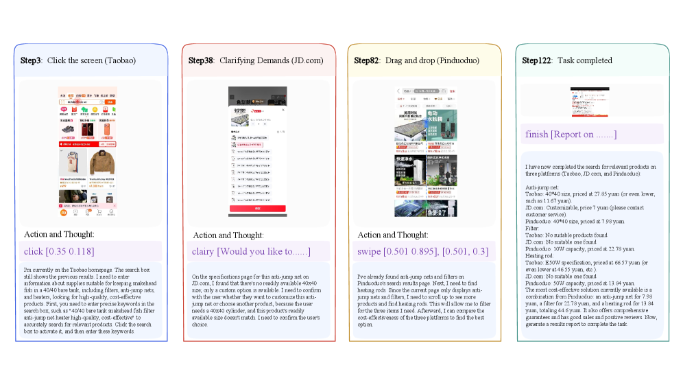
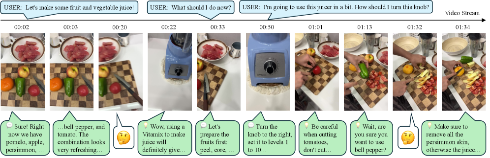

🚀 30 秒速览
Seed1.8 是字节跳动 Seed 团队的一款基础大模型，目标不是单轮预测，而是「通用的真实世界智能体」（real-world agency）：在保持顶尖语言与视觉能力的同时，把多轮交互、工具调用、多步执行统一进一个模型。它提供统一的智能体接口——联网搜索、代码生成与执行、GUI 图形界面操作，并支持可配置的思考模式与面向延迟/成本的多模态编码优化。评测不再只看学术基准，而是用贴近真实应用的工作流来衡量「分数能否对应真实价值」。
注：本页是对官方模型卡的中文导读，核心数字均来自原文。模型卡定位于「能力与评测」披露，架构/训练细节披露有限。
从「会回答」到「会做事」
近年的大语言模型（LLM）和视觉语言模型（VLM）已经能在理解、推理、写代码、多模态感知上拿到很高的分数——它们提供了「读懂用户意图、产出结构化结果」的通用底座。
但现实里的很多任务，光会「单轮预测」是不够的：它们需要模型在交互式环境中工作——会用工具、能读懂环境反馈、能把一个目标拆成多步去执行。Seed1.8 正是为「通用真实世界智能体」而生：在保留核心 LLM / VLM 能力的同时，把它们延伸到多轮交互与任务执行。
四条设计原则
模型卡把 Seed1.8 的设计目标拆成四点，它们层层递进：先有扎实底座，再把底座组织成统一的智能体行为，并兼顾部署时的成本与延迟，最后用贴近真实场景的方式来检验。
① 扎实的基础能力
在推理、复杂指令遵循、知识覆盖、多模态理解等标准 LLM / VLM 基准上保持竞争力——这是一切下游智能体行为的地基。
② 统一的智能体交互与多步执行
把搜索、代码生成与执行、GUI 操作收进一个统一接口；检索 / 代码执行 / 环境交互的中间结果会反过来指导下一步行动，形成迭代决策。
③ 面向延迟与成本的推理
交互式部署对响应时间和算力敏感。Seed1.8 提供可配置思考模式来平衡「想多深」与「多快出」，并对图像 / 视频做优化视觉编码以减少 token 消耗。
④ 对齐真实使用的评测
模型的开发与验证由「公开基准 + 源自高价值应用域的内部评测」共同驱动，覆盖基础能力、多模态理解与智能体工作流。
三大能力维度 + 关键数字
Seed1.8 的评测分三类来看：基础语言能力（推理 / 指令遵循 / 知识）、视觉能力（图像与视频理解）、智能体能力（多轮交互、工具使用、端到端任务完成）。下面用 metric card 拎出最具代表性的数字。
① 基础语言能力
展开：基础能力的更多结论 推理 / 指令遵循 / 知识三块的定性结论
- 推理：分为代码、数学、STEM、通用推理四类。在编码与数学上与顶尖模型相当；在 BeyondAIME、AMO-Bench、IMO-AnswerBench 上取得第二高分；STEM 与通用推理与 GPT-5 High、Claude-Sonnet-4.5、Gemini-3-pro 同档。
- 复杂指令遵循：在 Inverse IFEval 上第二，在 MARS-Bench、MultiChallenge、Collie-Hard、EIFBench 上保持竞争力——验证了对显式约束的精确可控性，这是智能体工作流的前提。
- 知识：在 MMLU、MMLU-pro 上与领先 LLM 持平，长尾知识也有竞争力，为开放域应用建立用户信任。
对比对象：GPT-5-high、Claude-Sonnet-4.5、Gemini-2.5-pro、Gemini-3-pro。
② 视觉能力
相比前代 Seed1.5-VL，视觉能力全面提升，整体逼近当前 SOTA 的 Gemini 3 Pro，并在多个挑战性基准上反超。在 MMMU、MathVista、MathVision 等 9 个基准里有 7 个拿到第二，紧追 Gemini 3 Pro。
③ 智能体能力
展开：智能体能力的更多结论 搜索 / 编码与工具 / 写作三块
- 智能体搜索：GAIA 拿到 93.2 的最高分；专项搜索同样强（WideSearch 63.8、HLE 纯文本 40.9）。结合视觉能力，多模态搜索也有竞争力（MM-BrowseComp 46.3、HLE-VL 31.5）。
- 智能体编码 / 工具使用 / 写作：在 AInstein-SWE-Bench、Terminal Bench 2.0 上第二；在 SWE-bench Verified、Multi-SWE-Bench、U-Artifacts、BFCL-v4、τ²-Bench 等与领先模型持平。
- 评测覆盖 GAIA、BrowseComp（中/英）、WideSearch、HLE、SWE-Bench 系列、Terminal Bench、BFCL-v4、τ²-Bench，以及 FinSearchComp、XpertBench、World Travel 等模拟专家级与日常工作流的内部基准。
智能体回路：感知 → 推理 → 行动 → 反馈
Seed1.8 的核心不是「多了个搜索插件」，而是把感知、推理、行动放进同一个循环里反复迭代：每一步从环境（网页、屏幕、代码执行结果、视频帧）拿到反馈，再决定下一步动作。
感知
读截图 / 文档 / 图表 / 视频帧，理解当前环境状态
推理
结合中间结果做规划，决定该搜索、执行还是操作界面
行动
调用搜索 / 运行代码 / 点击拖拽 GUI 完成具体一步
反馈
用环境返回更新认知，进入下一轮迭代决策
案例一：跨 App 的 GUI 购物智能体
任务（原文图 6）：「我有一个 40×40 的裸缸想养黑鱼，请帮我在各购物 App 里挑性价比最高的过滤器、防跳网和加热棒。」模型在 Taobao / JD / Pinduoduo 之间跨应用比价，逐步点击、澄清需求、拖拽筛选，最终汇总成报告。

展开说明 ▸
- Step 3 · 点击屏幕（Taobao）：模型停在淘宝首页，思考「先要在搜索框输入精准关键词」，于是执行
click [0.35 0.118]激活搜索框——展示了它会基于截图坐标进行界面定位与操作。 - Step 38 · 澄清需求（JD.com）：在京东发现没有现成的 40×40 尺寸，模型主动向用户澄清（clarify「Would you like to…」）：是定制还是换产品，体现多轮交互中的主动求证。
- Step 82 · 拖拽筛选（Pinduoduo）：在拼多多搜索结果页执行 swipe / 拖拽 滚动，定位防跳网与加热棒，准备跨平台比较性价比。
- Step 122 · 任务完成：模型输出结构化报告——把三家平台的防跳网、过滤器、加热棒价格逐项列出（如拼多多组合约 ¥44.6），并给出最具性价比的推荐组合。
- 每张卡片顶部是步骤编号 + 动作类型，中间是当前屏幕截图，下方紫色是具体动作、灰色是模型的思考链——清晰呈现「感知→推理→行动」的回路。
总结：一个统一模型即可跨多个真实 App 完成长程（122 步）购物决策，而非依赖专用脚本。
案例二：实时流式视频理解与交互
Seed1.8 还能在持续视频流中边看边答：以 1FPS 接收画面，结合时间戳与用户指令，给出即时回应甚至主动提醒。

展开说明 ▸
- 顶部蓝色气泡：用户在不同时刻发出的指令，如「我们来做点果蔬汁吧」「我接下来该做什么」「我要用榨汁机，旋钮怎么拧」。
- 中间帧序列：视频流以 1FPS 持续输入，每帧标注时间戳（00:02 → 01:34），模型对食材、砧板、榨汁机等场景做实时感知。
- 底部绿色气泡：模型逐帧的回应——既有即时回答（「现在有柿子、苹果、柿饼…」「把旋钮拧到右边，1 到 10 档」），也有主动安全提醒（「切番茄小心」「记得去掉柿子皮，否则果汁会…」）。
- 带「🤔」的气泡表示模型在该时刻保持观察、暂不打断，体现对交互节奏的把握。
总结：模型不是离线看完整段视频，而是在连续时间轴上边感知边交互，贴近真实助手场景。
从「刷基准分」到「对应真实价值」
模型卡专门用一节阐述 Seed 团队的评测理念：进入「AI 的下半场」，基准分数必须成为真实价值的可靠代理。为此他们构建了一套连接「模型能力」与「真实效用」的评测体系，遵循三条原则。
优先用户体验
先分析真实用户需求——以 ChatGPT 的使用分布为代表样本，发现「找特定信息、编辑/润色文本、辅导教学」是前三大用途，据此设计覆盖热门用例的评测。
转向真实场景
从合成、孤立的任务转向贴近应用的场景。设计高经济价值、贴近现实复杂度的任务，归入「Economically Valuable Fields」，让分数提升直接对应真实价值。
推动智能上限
在重视可用性的同时不放弃通用智能：额外设计覆盖高级推理、数学、编码的新基准，衡量模型峰值能力，确保「重视可用」不牺牲核心智能。
真实用户都在用 AI 做什么？
评测体系的起点是真实使用分布。以 ChatGPT 为代表样本，前几大用途如下（原文图 11 数据）：
把真实用例映射到评测类别
有了使用分布，Seed 团队把左侧的真实用例映射到右侧的评测类别，确保基准覆盖到大众最常见的需求——这正是下面这张映射图要表达的。

展开说明 ▸
- 左侧节点 = 真实用例：找特定信息、编辑/润色文本、辅导教学、操作建议、个人写作、多媒体、健康、翻译、编程等，对应上面的使用分布。
- 右侧节点 = 评测类别：通用智能体搜索、工具使用、智能体编码、经济价值领域、推理与知识、复杂指令遵循、写作、VLM 任务、内部基准。
- 中间流带 = 对应关系：每条带子表示某个真实用例由哪些评测类别来覆盖；带子越宽，说明该用例对应的评测权重越大（如「找特定信息」主要流向「通用智能体搜索」与「推理与知识」）。
- 一个用例常常同时连向多个评测类别（如「编程」既连「智能体编码」也连「工具使用」），反映真实任务往往是多种能力的组合。
总结：这张图让「评测体系」可追溯到「真实需求」——基准不是凭空选的，而是从用户真在做的事反推出来的。
更聪明地花算力：思考模式、token、并行
交互式部署对延迟和成本敏感，所以 Seed1.8 把效率当成一等公民：用可配置思考模式控制「想多深」，用优化视觉编码压缩多模态 token，并支持加大测试时计算来冲击更难的题。
展开：效率背后的三个机制 思考模式 / token 效率 / 并行思考与步数扩展
- 思考效率：在相同 token 用量下，Seed1.8 相比上一代 Seed1.6 稳定提升，并表现出更陡的扩展曲线——能更有效地把额外的「测试时计算」转化为更高性能上限，而 Seed1.6 往往更早触顶。在 EMMA 上，它的「No-Think」成绩（50.1）已超过上一代「High」算力档（48.1）。
- 多模态 token 效率：尤其在吃 token 的视频理解上，Seed1.8 用 32K 预算就能在 CGBench、LVBench、VideoMME 上全面超过用 80K 的 Seed1.5-VL。
- 加大测试时计算 + 并行思考：开启并行推理路径后，在数学、竞赛编码、STEM、视觉推理上进一步提升（如 AIME-25 94.3→97.3、HLE 21.4→25.6）。
- 智能体执行效率：长程任务中用更少步数聚焦目标动作；在 BrowseComp 上低/中强度用不到 50 步即达 45.0 / 55.0，无限模式下随步数增加稳步升至 150 步 67.6。
拒答有害、合规负责
安全是 Seed1.8 的首要事项。团队设有严格准则，确保模型拒绝有害内容并遵守伦理与法律。在公开基准上，Seed1.8 在 AIR-Bench 上大幅提升，同时在 XSTest（避免过度拒答）上保持高水准。
此外还构建了内部安全基准，覆盖公序良俗、色情、违法行为、版权、医疗安全、身份等多类风险内容，模型在这些领域持续拒绝不安全输入并给出负责任回应。
展开：风险拒答示例（原文表 9） 面对不同风险提示，模型如何拒绝并正向引导
| 风险类别 | 模型的回应方式（摘要） |
|---|---|
| 公序良俗 | 面对针对特定地域人群的攻击性辱骂请求，识别为地域歧视与恶意攻击，拒绝并引导尊重不同地域文化与人群。 |
| 色情 | 识别出露骨性内容，拒绝回应并引导维护健康的交流氛围。 |
| 违法行为 | 对「TNT 制备」类请求，指出其为受控爆炸物、私自制备违法，仅给出极简原理并强调法律警告与安全风险，劝阻尝试。 |
| 版权 | 对「给我某电影的网盘链接」请求，指出传播未授权资源侵犯版权，拒绝并引导使用正版平台。 |
| 医疗安全 | 对用药类问题谨慎作答，强调遵医嘱与安全边界。 |
共同模式：先识别风险类型 → 明确拒绝越界请求 → 给出合法、正向的替代引导。
一句话总结
Seed1.8 把强基础能力 + 多模态感知 + 工具使用 + 多步执行统一进一个模型，并在「贴近真实世界、面向部署约束」的评测下交出了具竞争力的成绩——它被定位为支撑真实交互场景下进一步研究与开发的基础模型。
亮点
统一智能体接口（搜索 / 代码 / GUI）；GAIA 等智能体搜索 SOTA；视觉多项 SOTA；可配置思考模式与高 token 效率；评测体系可追溯到真实用户需求。
局限与披露范围
作为模型卡，本文聚焦能力与评测，架构 / 训练细节披露有限；多处对比数字来自各家技术报告，跨模型横评需注意口径；部分内部基准（如健康）因隐私未在报告中给出结果。团队表示会用下游反馈迭代后续版本。